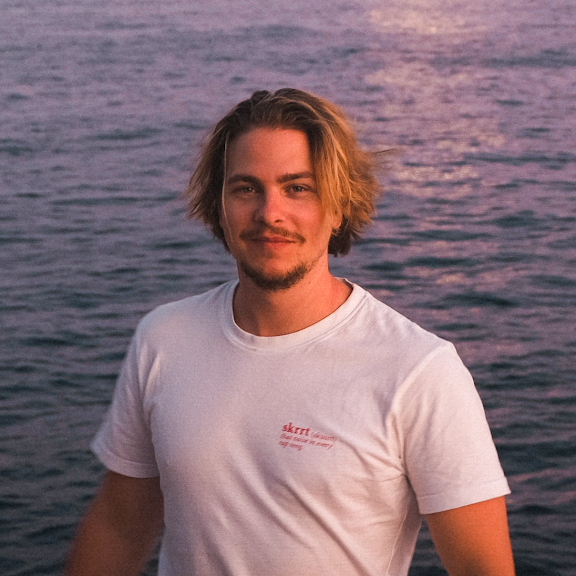

Interaktion schaffen
Ich arbeite an der Schnittstelle von Technik, Design und interaktiven Medien. Auf Grundlage meiner Ausbildung zum Automatiker habe ich während meines Studiums im Post-Industrial Design am HyperWerk (FHNW) eine Praxis entwickelt, die sich auf spielerische und interaktive Installationen konzentriert. In meiner Arbeit erforsche ich, wie Menschen über Objekte, Materialien und technologische Systeme miteinander in Beziehung treten. Mit digitaler Fertigung, Elektronik und experimentellem Prototyping gestalte ich Installationen, die Besuchende aktiv erleben, statt sie nur zu betrachten.
Im Zentrum meiner Praxis steht das Spiel als sozialer Rahmen — eine Möglichkeit, neue Formen von Interaktion, Zusammenarbeit und Kommunikation zu erproben. Neben meiner künstlerischen Arbeit entwickle ich Rätsel und Spielmechaniken für einen Escape Room. Diese Praxis hat mein Interesse daran geprägt, wie Menschen unterschiedliche Probleme angehen und wie sich zwischen Unter- und Überforderung der „Flow“-Moment einstellt. Ich untersuche außerdem, wie Spielräume soziale Hierarchien temporär auflösen können: Auf einem gemeinsamen Spielfeld begegnen sich Menschen unabhängig von Rolle oder Herkunft auf Augenhöhe.